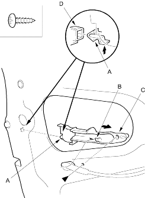

- Install the handle in the reverse order of removal and note these items:
- Make sure the door locks and opens properly.
- Make sure each rod is connected securely.
- Make sure the door locks and opens properly.
- When installing the lock cylinder, leave the outer door handle bolts loose so the inner protector does not interfere with the lock cylinder, then tighten the handle bolts.
- Install the lock cylinder retaining clip on the handle, then install the lock cylinder. Be sure the clip is fully seated in the slot on the lock cylinder.
NOTE: Put on gloves to protect your hands.
- Raise the glass fully.
- Remove these items:
- Door panel (see page 20-4)
- Plastic cover, as necessary
- Disconnect the cylinder rod from the lock cylinder (see step 3 on page 20-5) and disconnect the outer handle rod from the outer handle (see step 7 on page 20-6).
- For some models: Remove the screw and release the clip (A) and hook (B) while pulling the cable protector (C) forward, then remove it from the latch (D) and door.
Fastener Location
 : Screw, 1
: Screw, 1
